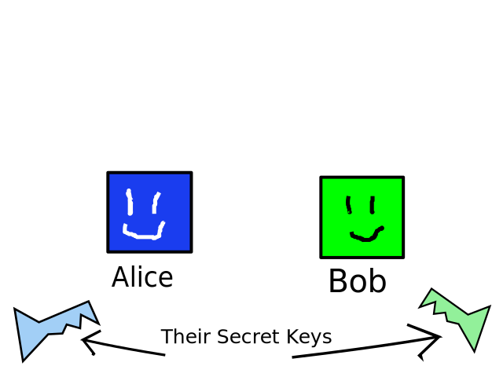
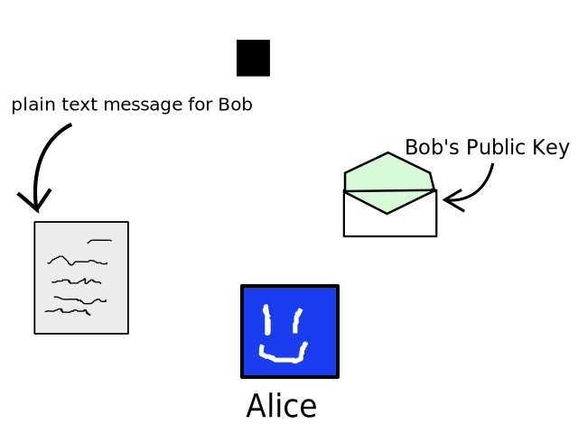

class: center, middle # Sign in here http://bit.ly/dtla-11-29 --- # Build With Code: Cryptographically Secure Applications --- ## What is our objective? To learn ways we can build cryptographically secure programs with JavaScript! --- ## Why do we want to learn about cryptographically secure programs? Because cryptography is tool that allows us to build applications with certain assurances: * that data we _receive_ is *from* who we think it's from * that data we _send_ can only be read by the person we intend ...and these assurances give us more control over our own data. --- class: center, middle ## Cryptography => Control over data --- name: how-will ## How will we do this? --- template: how-will 1. -- template: how-will 2. -- 3. Writing your own code to write secure programs! --- ## Contents 1. Public-Key Cryptography 2. Sodium 3. Buffers _Interlude: How to pair program really well_ 4. Pair Programming! 5. Recap & Review --- class: center, middle, orange # Public Key Cryptography --- name: public-key ## Public Key Crypto --- template: public-key 1. Public Key 2. Private (secret) key --- template: public-key <img src="assets/pk.svg" height="400" width="640" /> --- template: public-key ### Scenario: ### Alice wants to send a message to Bob -- She doesn't care if he knows it came from her. (it's anonymous) --- template: public-key  --- template: public-key  --- template: public-key They each have a secret key. They don't share this with anyone.  --- template: public-key They each have a public key, too. They give this away to anyone!  --- template: public-key  --- template: public-key  --- template: public-key  --- template: public-key ### Scenario: ### Bob receives a message -- He doesn't know who it came from. --- template: public-key  --- template: public-key Bob decrypts with his __public__ & __private key__  --- template: public-key ## Questions: * What do I need from you if I want to send you an encrypted message? -- * What would happen if a bad person impersonated me, copied my public key, and got someone to send them an encrypted message that was meant for me? --- class: center, middle, orange # libsodium ## fast & secure crypto library --- ## Sodium --- class: center, middle, orange # Buffers in Node.js --- name: buffers ## Buffers --- template: buffers * a Buffer is the interface we use to __read from__ and __change__ chunks of binary data. -- template: buffers * It corresponds to a block of memory -- template: buffers  --- template: buffers To get hold of a buffer in Node.js you need to allocate some amount of space  --- template: buffers  --- # Interlude: How to be great at pair-programming -- * 90 seconds to understand problem before starting -- * One person typing, other describing approach to solving problem -- * be good to one another --- # Exercises ### http://bit.ly/2r3aT5G ---